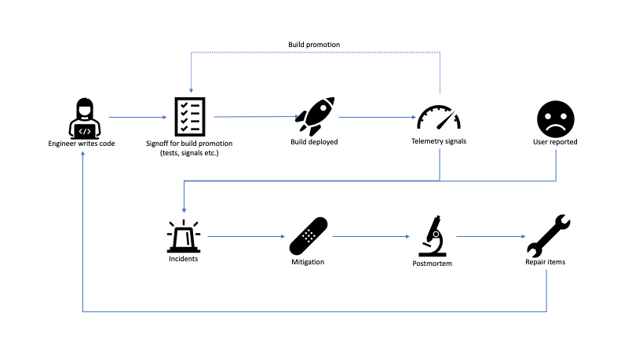
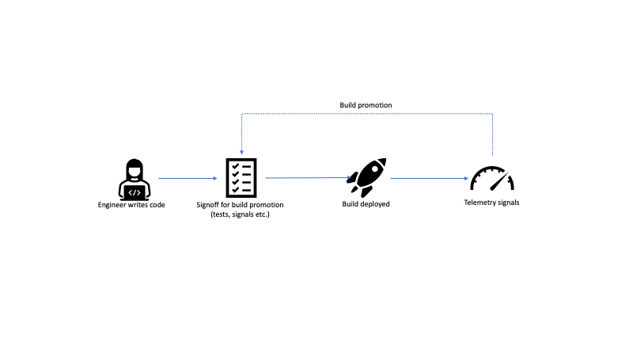
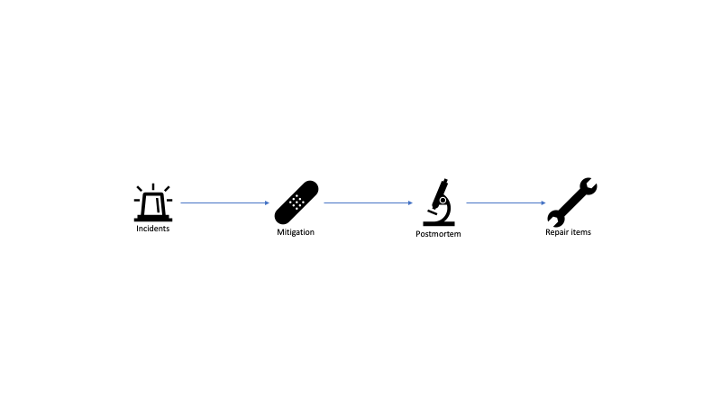

Notes on Software Lifecycle
I spent a lot of time lately looking at how our team can improve our product's reliability and capability to respond to production incidents. This got me thinking about the lifecycle of a contemporary software project. The model I've been using for this looks like the following:

At a high level, the cycle starts with engineers writing code. The code gets merged and at some cadence, a new build is prepared for release. This usually includes looking at a combination of testing and telemetry signals for engineers to signoff on deploying the build. In case tests fail or telemetry shows some anomalies, the deployment is abandoned. If all looks good, the build gets deployed. Once the build is exposed to a larger audience, more telemetry signals come in.
Most software these days uses some form of controlled exposure. For example, services might be deployed first in a dev environment, then in a pre-production environment, then to production in one region, then to all regions. Client software is similarly deployed to different rings, for example new Office builds get deployed first to the Office organization, then to all of Microsoft, then to customers who opted into the Insider program, then to the whole world (I'm very much oversimplifying things here, as release management for Office is way more complex, but you get the idea). Telemetry signals from a ring feed back into the build promotion process to give confidence that a build can be exposed to a larger audience in the next ring.
Of course, sometimes things go wrong. We identify issues in the product, either from telemetry signals or, worse, from user reports. These become live site incidents. On-call engineers react to these and try to mitigate as fast as possible. After the fire is put out, a good practice is to run a postmortem to understand how the issue happened and see how it can be prevented in the future. The learnings usually translate into repair items, which get added to the engineering backlog.
We can split this lifecycle into two parts: a proactive part and a reactive part, which roughly map to the top and bottom halves of the diagram.
Proactive
The proactive part deals with what we can do to prevent issues from making it to production.

There are several things that could allow issues to slip through the cracks.
Code
On the coding part, a feature might be missing tests to uncover regressions, it might not be instrumented well enough to get good signals, or it might not be put under a feature gate. Feature gates are service-controlled flags that can be turned on/off to disable a feature. These are extremely valuable for quickly mitigating production issues.
All of the above are addressed through education and engineering
culture: more junior engineers on the team might not even be aware of
all the requirements a feature should satisfy before it is ready
(see my Shipping a
Feature
post).
A good practice is to have a feature checklist, a list of things engineers need to consider before submitting a pull request. This includes things like test coverage, telemetry, feature gates, performance, accessibility (for UI) etc.
Everyone writing code should know where this checklist is, and code reviewers should keep it in mind while evaluating changes.
Signoff for Build Promotion
Two main issues would allow a regression to get passed the build validation process: either there is a gap in validation, or missed signals. This, of course, assumes that the code has tests and is properly instrumented in the coding stage. Here, the person or persons validating a build, either miss running some validation (automatic or manual tests) or miss looking at a telemetry signal that would tell them something is wrong.
Both of these issues can be addressed with automation.
Have a go/no-go dashboard that aggregates all relevant signals (like test run results, telemetry metrics).
Of course, putting together such a dashboard and ensuring all code has the right test automation and instrumentation is not easy.
Telemetry Signals
Telemetry could have gaps: issues could manifest themselves without us receiving a signal. If this happens, we need to learn from these incidents, understand where the gaps are, and eliminate them. More about this on the reactive part.
Reactive
The reactive part deals with how we can mitigate issues as quickly as possible if they make it to production.

Incidents
The entry point into the reactive cycle is an incident. An incident alerts the on-call engineer and starts the mitigation process. The sooner an incident is created, the sooner it can be addressed.
Issues here come from alerting. An alerting system runs automated queries over incoming telemetry signals and looks for some anomalies or thresholds. Things can go wrong in multiple ways:
We can collect a lot of telemetry but not have the right queries to notice sudden spikes, or drops, or other anomalies in the telemetry stream.
We could be overly cautious and generate too many alerts, most of them false positives, which makes it hard for on-call to figure out when an alert is real.
Alerts might be very generic and not contain enough information for on-call to easily mitigate.
Alerts should be continuously finetuned to be accurate and actionable, with as few false positives as possible.
Telemetry signals, even if correct, can be impacted by multiple things outside of our control. For example, usage might raise or drop sharply during weekends (depending on whether we're talking about a game or a productivity app) or holidays. This makes it even harder to develop accurate alerts.
The worst case is when issues get reported by customers before we see any alerts: this signifies a big gap and a postmortem should identify the follow up work (see postmortems below).
Mitigation
Several things can make mitigation harder. The on-call engineer might not know how to handle certain types of incidents.
It's a good idea to have a troubleshooting guide (TSG) for each type of alert, where an area expert details the steps to mitigate an issue.
Another common issue is there is no easy mitigation. This goes back to our coding section: code should be behind feature gates, so mitigation is as easy as flipping a switch.
Yet another common issue, which we covered in the previous section when we discussed alerts, is not having enough information to easily pinpoint the actual issue. The on-call engineer sees an incidents, knows something is wrong, but not enough information is available for a quick mitigation. Alerts should contain enough information to be useful.
Postmortems
Postmortems are an invaluable tool for learning from incidents. Postmortems are reviews of incidents once mitigated, root caused, and understood, where the team gets together to discuss what happened and take steps to prevent the same type of issue form happening in the future. A postmortem is not about blaming, it is about answering the following question:
What can we do to ensure this doesn't happen in the future?
A postmortem that doesn't answer this question is not that useful. A good postmortem identifies one or more work items that can be handed to engineering to implement additional guardrails so the same issue doesn't recur.
Repair Items
Finally, identifying repair items is not enough. A long backlog of repair items that nobody gets around to implement won't make things any easier.
Engineers should treat repair items with priority.
Repair items are some of the most critical work items: we've seen incidents in production, we know the scope of the impact, and we know the work needed to prevent them in the future.
Summary
In this post we looked at a model of software lifecycle, consisting of a proactive part: engineers writing code, a signoff process to promote a build, and signals to increase the audience for a build; and a reactive part: a live site incident, which on-call engineers mitigate, the team postmortems, and comes up with a set of repair items.
We also looked at some of the common issues across these various parts of the lifecycle, and some best practices.
This was a very high-level overview - each of these steps has a lot of depth, from writing safe code, to release management, to telemetry models, site reliability engineering, and so on. All of these are critical parts of shipping software.